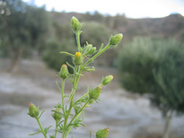
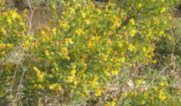
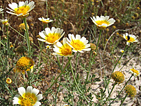

| PHRYGANA | Fauna | Flora |
additions nouveautés |
espèces species |
contact -
info - commentaires phrygana1 (at) gmail.com |
| Particularités crétoises | Galles et mines |
| Eupithecia centaureata (Denis & Schiffermuller 1775) |
| 103 | Fauna | GEOMETRIDAE | Larentiinae | Eupithecia Curtis 1825 |
Eupithecia centaureata Melambes (Agios Giorgos) 14 février 2010 |
| en: Lime-speck pug de: Mondfleckiger Blütenspanner fr: l'Eupithécie de la centaurée |
| Envergure: 20 - 24 mm |
| Couleur de fonds blanche, rarement gris blanchâtre, avec une tache gris bleuté ou noire sur le bord costal. Abdomen brun ocre, avec des points blancs et le dernier segment blanc. |
| Chrysalide dans le sol meuble ou dans la litière |
| Espèce plurivoltine |
| Période de vol: février mars août septembre octobre novembre |
| Statut en Crète: indigène -- native |
| Biotopes en Crète: phrygana, olivaies, garrigue, milieux ouverts, vergers, bords de route, jusqu'à 2000 m. |
| Distribution: Europe, Afrique du Nord, Moyen-Orient, Asie centrale. |
| Note: l'adulte vient à la lumière. |
| Larve polyphage: feuilles, fleurs et graines de nombreuses plantes herbacées (diverses Oleaceae dont: Ranunculaceae, Rubiaceae, Apiaceae, Asteraceae) dont: | ||
|  |  |  |
| Dittrichia graveolens | Dittrichia viscosa subsp. angustifolia | Glebionis coronaria var. discolor |
|
Eupithecia centaureata Melambes (Agios Giorgos) 06 octobre 2009 |
|
Eupithecia centaureata Melambes (Agios Giorgos) 29 novembre 2010 |
| 01 janvier 2012 |
| © paul fontaine -- © Phrygana.eu 2007 -- 2013 |